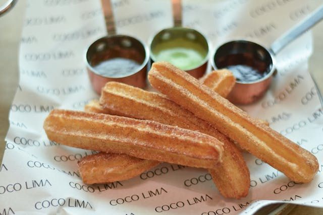
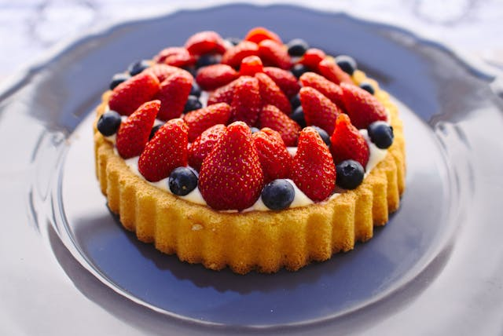

Powdered cookie
Price: $4.00
Start by creaming together softened butter and powdered sugar until light and fluffy. Add in vanilla extract for flavor, then gradually incorporate sifted all-purpose flour until a soft dough forms. Roll the dough into small balls, then gently flatten each one with a fork dipped in powdered sugar to prevent sticking. Place the cookies on a parchment-lined baking sheet and bake in a preheated oven until they're just set and the edges are lightly golden. Once cooled, dust the cookies generously with powdered sugar for a beautiful, snowy finish. These melt-in-your-mouth treats are perfect for any occasion and will surely be a hit with friends and family.
Croissant filled with vanilla
Price: $6.00
Homemade croissants is a rewarding process that begins with preparing a rich, buttery dough. Mix together flour, sugar, salt, and yeast, then add in warm milk and knead until a smooth dough forms. Roll out the dough into a large rectangle and spread softened butter over two-thirds of the surface. Fold the unbuttered third over the buttered portion, then fold the remaining third on top, creating layers. Chill the dough, then repeat the rolling and folding process multiple times to create flaky layers. After the final fold, chill the dough again before shaping it into crescents. Let the shaped croissants rise until doubled in size, then bake in a hot oven until beautifully golden and puffed. The result is a batch of irresistibly flaky and buttery croissants, perfect for breakfast or anytime indulgence.
Churros
Price: $2.50
Start by combining water, butter, sugar, and a pinch of salt in a saucepan, bringing the mixture to a gentle boil. Remove from heat and stir in flour until a thick dough forms. Transfer the dough to a piping bag fitted with a star tip. Heat oil in a deep pan until hot but not smoking. Pipe the dough directly into the hot oil, using scissors to cut the churros to your desired length. Fry until golden brown and crispy, then remove and drain on paper towels. Roll the warm churros in a mixture of cinnamon and sugar for that classic flavor. Serve immediately with a side of chocolate sauce or dulce de leche for dipping. Enjoy the crunchy exterior and soft, fluffy interior of these homemade churros, perfect for sharing with friends and family.
Strawberry Pie
Price: $10.00
Creating a delightful strawberry pie begins with a flaky, buttery pie crust. Preheat the oven and prepare your crust in a pie dish, either homemade or store-bought. Next, wash and hull fresh strawberries before slicing them into uniform pieces. In a saucepan, combine sugar, cornstarch, and water, stirring until smooth. Bring the mixture to a boil, stirring constantly until thickened, then remove from heat and stir in a splash of lemon juice. Gently fold the sliced strawberries into the thickened mixture until well coated. Pour the strawberry filling into the prepared pie crust and spread it evenly. Chill the pie in the refrigerator until set. Serve slices of this luscious strawberry pie topped with whipped cream or a scoop of vanilla ice cream for a delightful summertime treat.